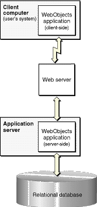
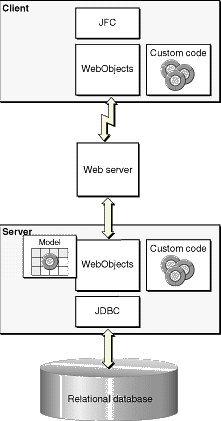
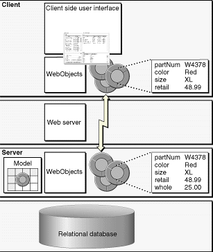

| PATH |

The Java Client architecture differs from the HTML-based WebObjects architecture in that it's distributed across client and server systems as shown in Figure 6-2. The server-side portion interacts with a database server and the client-side portion provides all or part of the application's user interface.
Figure 6-2 Java Client's distributed, multitier architecture
The client and server applications have duties other than merely providing the user interface and database access-for example, each can contain business logic and each communicates with the other through a Web server. However, the database access/user interface division is significant because it provides a richness of user interface without compromising security or performance. Sensitive business logic and database connection logic is provided only by the server application. Because compiled Java on the client side can be decompiled, the client application is limited to user interface code and nonsensitive business logic. At the same time, the ability to put some of the business logic on the client (any nonsensitive logic) improves performance. By performing as much processing as possible on the client (such as field validation), round trips to the server are limited.
Unlike in HTML-based applications, the WebObjects component of the server-side application doesn't have to provide any user interface management. Instead, the Java Client architecture moves part or all of the user interface management to a client application, as shown in Figure 6-3. To support this division, the Java Client architecture duplicates the graph of enterprise objects on the client application so the graph and its management occur on both server and client. WebObjects handles all client-server communication and distributes the object graph across client and server.
Figure 6-3 Architecture of a Java Client application
The user interface itself is implemented using Java Foundation Classes (JFC). This is what gives a Java Client application the appearance and functionality of a traditional desktop application. WebObjects maps data between the application's user interface and the graph of enterprise objects. Changes to the object graph are automatically synchronized with the user interface and user-entered data is automatically reflected in the object graph.
Figure 6-4 shows the flow of data between the client and server applications for the Java Client architecture.
Starting in the upper left of the diagram and working down, when the client application initiates a fetch, the client application forwards the corresponding fetch specification to the server application. From there the normal mechanisms take over and an SQL query is performed in the database server.
Working back up the diagram on the right side, the database server returns the rows of requested data and, as usual, this data is converted to enterprise objects. The server then sends copies of the requested objects to the client. When the client receives the objects, it updates its user interface with values from the requested objects.
Figure 6-4 Data flow in a Java Client application
Although requested objects are copied from the server to the client, and these objects exist in parallel object graphs on both server and client, the enterprise objects on the client usually do not exactly mirror the enterprise objects on the server. The objects on the client usually have a subset of the properties of the objects on the server. You can partition your application's enterprise objects so the objects that exist on the client have a restricted set of data and behaviors. This ability allows you to restrict sensitive data and business logic to the server. For example, in Figure 6-4, the client side enterprise objects don't have the "whole" property, the price the seller paid to the manufacturer.
Once the client has fetched data, this data is cached and is represented internally by the client's object graph. As users modify the data (or delete or add "rows" of data), the client application updates the client's object graph to reflect the new state. When the client application initiates a save, the changed objects are "pushed" to the server. If the business logic on the server validates these changes, the changes are committed to the database.
Note that Java Client automatically updates the client with changes that have occurred on the server. Whenever the client makes a request, the server passes updates along to the client with whatever information the client requested. Similarly, Java Client has the opportunity to update the client before client-side objects remotely invoke methods on server-side objects.
© 2001 Apple Computer, Inc.